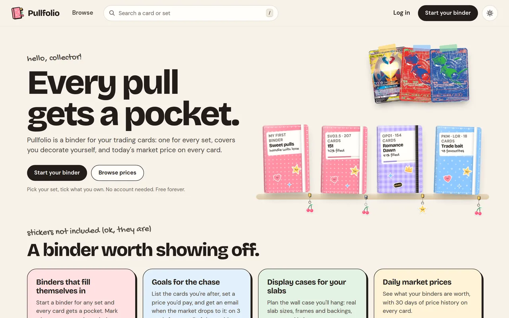

Tung Nguyen
Senior Software Engineer, New York
I’ve spent four years building Java/Spring Boot services and AWS event-driven systems, with Python, Go and TypeScript alongside.
Work
At EY (Technology Consulting) I work for a national quick-service restaurant chain on its POS and menu configuration platform, which spans 3,500+ locations. I own the menu configuration and POS control services from API design through production, and as release owner of the core Java/Spring Boot service I have shipped 18+ releases and same-day hotfixes.
Chain-wide configuration, moved onto a queue
A configuration change used to go out to every location over synchronous HTTP, and those calls timed out.
I moved the work onto an SQS queue. A worker processes it in batches and applies each change idempotently, so a failed message can safely go round again. A message that keeps failing is parked in a dead-letter queue, which raises an alert. The timeouts across 3,500+ locations stopped.
Narrowing venue menus
Venue menus listed 1,300+ items. I led the event-driven integration with an upstream menu-eligibility platform: its data comes in over SNS and SQS, and venue-aware APIs serve the result. A cross-account backfill of 1,000+ locations ran idempotently, behind per-store flags. Venue menus went from 1,300+ items to about 130.
Caching the POS hot path
I designed Redis caching layers for the customer-facing POS endpoints, including a cross-VPC integration with serverless ElastiCache that uses distributed locking, and rewrote the hot-path database queries. P95 API latency on those endpoints fell 65%.
Pullfolio
Pullfolio (08/2025 – present) is a trading-card collection app that I designed, built and launched on my own. It had 5,000+ visitors in 3 weeks. It has email, Google and Discord sign-in, shareable binder links, price alerts, and Stripe subscriptions with idempotent, signature-verified webhooks.

Experience
Ernst & Young (EY), Technology Consulting, New York, 08/2022 – present
- Senior Software Engineer 12/2024 – present
- Led production incident response across 6 AWS accounts; my runbooks cut repeat diagnoses from days to minutes.
- Cut deployment time 30% across 12+ microservices by re-engineering CI/CD.
- Software Engineer 08/2022 – 12/2024
- Designed gRPC/Protobuf integrations for downstream partner systems, with payloads 40% smaller than JSON.
- Mentored 3 junior engineers on microservices patterns.
Contract work
I also take on contract work: backend APIs and services, AWS pipelines and delivery, and scrapers and monitors. Every project starts with a written scope before any code. Email me about a project.